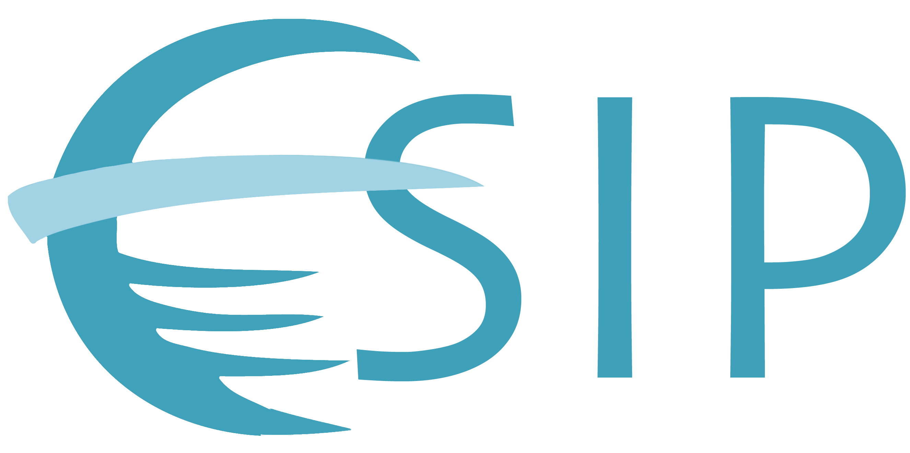

This GitHub site is a companion to the EarthArXiv preprint system hosted by the California Digital Library.
Not sure what a preprint is? Then, check out our Frequently Asked Questions page. In addition to the FAQ, this site contains community resources and our EarthArXiv preprint blog.
Capturing a broad spectrum of interest and experience will help EarthArXiv consider and include the full geoscience community. An essential step to achieving this objective is to ensure broad and intersectional diversity in staffing our Advisory Council.
As EarthArXiv came to fruition roughly 125 individuals volunteered to help out. We are grateful for such overwhelming support. Our initial Advisory Council was selected from this set of 125 volunteers with the above objectives in mind and these individuals will serve a 2-year term. We also encourage you to read our Diversity Statement.
EarthArxiv is proud to partner with the Public Library of Science (PLOS) to enable authors submitting to PLOS Climate, PLOS Sustainability and Transformation, and PLOS Water to post preprints with ease. Submitting authors will have the option to automatically forward their manuscript to the EarthArXiv preprint server, directly from these three journal submission systems.
The EarthArXiv community is also supported by the Earth Science Information Partners (ESIP) 